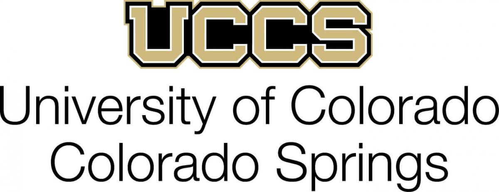
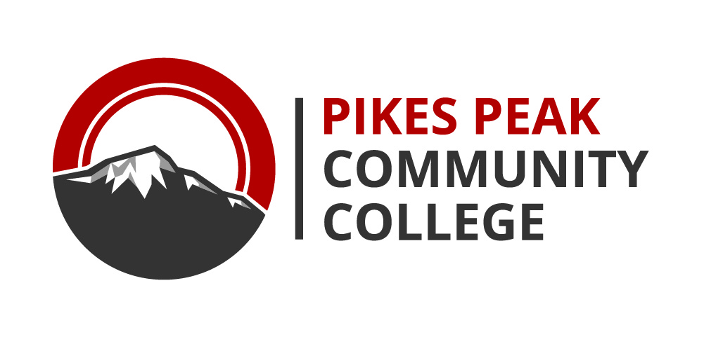

Joshua Doucet
Software and Computer Enthusiast
Ungraduate Years
Institutions and Degrees
|  |
B.S. Computer Science |
|  |
A.S. Mathematics |
Coursework
Communications
- COM 125 Interpersonal Communication
- COMM 3240 Business & Professional Communication
- TCID 2090 Technical Writing and Communication
- ENG 121 English Composition I
- ENG 122 English Composition II
- LIT 115 Intro to Literature I
Ethics & Hummanities
- PHI 112 Ethics
- CS 3050 Social and Ethical Implications of Computing
- SOC 101 Intro to Sociology
- ECO 201 Principles of Macroeconomics
- PHI 113 Logic
Mathematics
- MAT 121 College Algebra
- MAT 166 Pre-Calculus
- MAT 201 Calculus I
- MAT 202 Calculus II
- MAT 202 Calculus III with Engineering Applications
- MAT 215 Discrete Mathematics
- MATH 3130 Intro to Linear Algebra
- ECE 3611 Engineering Probability and Statistics
General Sciences
- GEY 112 Historical Geology
- PHY 211 Physics Calc-Based I
- PHY 212 Physics Calc-Based II
Computer Sciences
General
- CSC 119 Introduction to Programming (Java)
- CSC 160 Computer Science I: (C++)
- CSC 161 Computer Science II: (C++)
- CSC 230 C Programming: Platform
- CS 2080 Programming with UNIX
- CS 3160 Concepts of Programming Languages (Lisp, ML, C++)
- CS 4700 Computer Automata & Formal Languages
- CS 4100 Compiler Design I
- CS 4720 Design & Analysis of Algorithms
- CS 4420 Database Systems
- CS 4500 Operating Systems
Software Engineering
- CS 3300 Software Engineering I (Ruby on Rails)
- CS 3020 Object-Oriented Tech Usng C#/.Net
- CS 3110 Programming the Mobile Web (html/js)
- CS 3080 Python Programming
Architecture
- CS 2160 Computer Organization and Assembly Language (MIPS)
- CS 4200 Computer Architecture I (x86)
Security
- CS 4220 Computer Networks (C++/Linux)
- CS 4950 Homeland Security & Cyber Security
- CS 3910 Systems Administration & Security